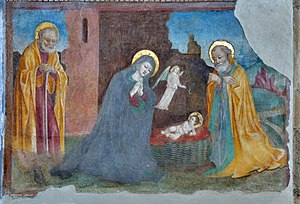

User talk:Wilfredor/Archive 17
| This is an archive of past discussions. Do not edit the contents of this page. If you wish to start a new discussion or revive an old one, please do so on the current talk page. |
{kind=link}
.jpg){kind=link}
.jpg){kind=link}
.jpg){kind=link}
.jpg){kind=link}
.jpg){kind=link}
Wonderful holidays
Merry Christmas and a happy New Year! --Tremonist (talk) 16:00, 23 December 2015 (UTC)
Natale 2015
Marry Christmas!  --Wolfgang Moroder (talk) 18:02, 23 December 2015 (UTC)
*** Happy holidays! *** 2016! ***
| * * * Happy Holidays 2016 ! * * * | ||
| * Merry Christmas! Happy New Year! * Joyeux Noël ! Bonne année! * Frohes Weihnachten! Frohes Neues Jahr! * Счастливого Рождества! С Новым годом! -- George Chernilevsky talk 18:12, 23 December 2015 (UTC) |
Merry Christmas!!
| Merry Christmas and Happy New Year 2016 ! | ||
Remember:
|
Feliz Navidad
Hola! Gracias por tus deseos. También yo te deseo a ti y a tu esposa y pequeño una feliz Navidad y lo mejor para el 2016! --Poco2 21:08, 23 December 2015 (UTC)
Árbol wikinavideño

|
¡Felices fiestas! |
| Felices fiestas The_Photographer. Feliz navidad y próspero año nuevo. Meow. ElGatoSaez (talk) 02:45, 24 December 2015 (UTC) |
Notification about possible deletion
Some contents have been listed at Commons:Deletion requests so that the community can discuss whether they should be kept or not. We would appreciate it if you could go to voice your opinion about this at their entry.
If you created these pages, please note that the fact that they have been proposed for deletion does not necessarily mean that we do not value your kind contribution. It simply means that one person believes that there is some specific problem with them, such as a copyright issue. Please see Commons:But it's my own work! for a guide on how to address these issues. |
Affected:
.jpg&action=edit&redlink=1){kind=link}
Yours sincerely, Themightyquill (talk) 09:51, 24 December 2015 (UTC)
BONNES FETES
Meric de ton envoie. Je te souhaite des bonnes fêtes pour toi et ta famille. Je ne connaissais pas les Hallacas çà a l'air très bon. --Archaeodontosaurus (talk) 09:14, 25 December 2015 (UTC)
- Template:Píng Il est une sorte de nourriture typique de mon pays, hallacas sont très bons. Je l'espère vous avez eu une bonne journée de Noël avec votre famille aussi. joyeux noel !! --The Photographer (talk) 12:29, 25 December 2015 (UTC)
It is written on that template to remove it after the discussion is finished, isn't it? --Tohaomg
- @Tohaomg: There are a nomination active --The Photographer (talk) 18:20, 27 December 2015 (UTC)
{kind=link}
FP Promotion
 |
★ This image has been promoted to Featured picture! ★
The image File:Loja de Sapateiro Aquarela Jac by Jean-Baptiste Debret 1820-1830.jpg, that you nominated on Commons:Featured picture candidates/File:Loja de Sapateiro Aquarela Jac by Jean-Baptiste Debret 1820-1830.jpg has been promoted. Thank you for your contribution. If you would like to nominate another image, please do so. |
/FPCBot (talk) 13:03, 28 December 2015 (UTC)
Best wishes for the holidays...

|
Season's Greetings !!!! | |
| Wishing you a Happy Holiday Season, and all best wishes for the New Year! And some drinks! Hafspajen (talk) 09:26, 29 December 2015 (UTC) |
Sobre los discursos dirigidos al público en Venezuela
Saludos,
Fue cambiada la licencia del archivo: AloPresidente10107042002fragmentoPDVSA.ogg
Desde
{{self|cc-by-sa-3.0}}a
{{PD-VenezuelaGov}}
Según el artículo 47, ver abajo, de la Ley sobre el derecho de autor del 01/10/1993 en Gaceta Oficial Nº 4638.
«Artículo 47.- Siempre que se indiquen claramente el nombre del autor y la fuente, es lícita también: 1. La difusión aun integral, por la prensa o radiodifusión a título de información de actualidad, de los discursos dirigidos al público pronunciados en asambleas, reuniones o ceremonias públicas o en debates públicos sobre asuntos públicos ante órganos de los poderes nacionales, estadales o municipales.»
--Omerta-ve (talk) 01:57, 30 December 2015 (UTC)
- @Omerta-ve: No me queda claro lo de La difusión aun integral, la licencia no contempla el uso comercial y las posibles modificaciones. --The Photographer (talk) 02:01, 30 December 2015 (UTC)
Happy New Year!

|
| Have a great 2016. -- Colin (talk) 11:59, 1 January 2016 (UTC) |
QI Tunisia training
As part of the project Quality images training in Tunisia, the Wikimedia TN user group is looking for a Wikimedia commons User able to organize a training about Quality images, featured pictures, Valued images and Graphic Lab/Photography in Tunisia from February 18th to 22th, 2016. To participate please fill this form --Touzrimounir (talk) 20:08, 3 January 2016 (UTC)
Sobre los discursos dirigidos al público en Venezuela
La difusión aun integral se refiere a que se puede comunicar/difundir la totalidad o parte del acto oficial. Pero, si la preocupación es por el uso comercial, derechos patrimoniales, será mejor argumentar a partir del artículo 4:
Artículo 4º. No están protegidos por esta Ley los textos de las leyes, decretos, reglamentos oficiales, tratados públicos, decisiones judiciales y demás actos oficiales.
Esto deja a los actos oficiales en el dominio público. — Preceding unsigned comment added by Omerta-ve (talk • contribs) 21:36, 04 January 2016 (UTC) --Omerta-ve (talk) 21:37, 4 January 2016 (UTC)
.jpg&action=edit&redlink=1){kind=link}
File:Moon (6225531455).jpg has been listed at Commons:Deletion requests so that the community can discuss whether it should be kept or not. We would appreciate it if you could go to voice your opinion about this at its entry.
If you created this file, please note that the fact that it has been proposed for deletion does not necessarily mean that we do not value your kind contribution. It simply means that one person believes that there is some specific problem with it, such as a copyright issue. Please see Commons:But it's my own work! for a guide on how to address these issues. |
Stas (talk) 03:05, 5 January 2016 (UTC)
.jpg){kind=link}
FP Promotion
| ★ This image has been promoted to Featured picture! ★
The image File:Sistema de orquestas y coros juveniles e infantiles del Zulia, Venezuela.ogv, that you nominated on Commons:Featured picture candidates/File:Sistema de orquestas y coros juveniles e infantiles del Zulia, Venezuela.ogv has been promoted. Thank you for your contribution. If you would like to nominate another image, please do so. |
/FPCBot (talk) 13:03, 8 January 2016 (UTC)
.jpg&action=edit&redlink=1){kind=link}
File:Boda de Erick y Tania (2838189537).jpg has been listed at Commons:Deletion requests so that the community can discuss whether it should be kept or not. We would appreciate it if you could go to voice your opinion about this at its entry.
If you created this file, please note that the fact that it has been proposed for deletion does not necessarily mean that we do not value your kind contribution. It simply means that one person believes that there is some specific problem with it, such as a copyright issue. Please see Commons:But it's my own work! for a guide on how to address these issues. |
Richard Avery (talk) 15:58, 8 January 2016 (UTC)
.jpg){kind=link}
.jpg&action=edit&redlink=1){kind=link}
File:Boda de Erick y Tania (2838202789).jpg has been listed at Commons:Deletion requests so that the community can discuss whether it should be kept or not. We would appreciate it if you could go to voice your opinion about this at its entry.
If you created this file, please note that the fact that it has been proposed for deletion does not necessarily mean that we do not value your kind contribution. It simply means that one person believes that there is some specific problem with it, such as a copyright issue. Please see Commons:But it's my own work! for a guide on how to address these issues. |
Richard Avery (talk) 15:58, 8 January 2016 (UTC)
.jpg){kind=link}
File:Boda de Erick y Tania (2838202789).jpg has been listed at Commons:Deletion requests so that the community can discuss whether it should be kept or not. We would appreciate it if you could go to voice your opinion about this at its entry.
If you created this file, please note that the fact that it has been proposed for deletion does not necessarily mean that we do not value your kind contribution. It simply means that one person believes that there is some specific problem with it, such as a copyright issue. Please see Commons:But it's my own work! for a guide on how to address these issues. |
Richard Avery (talk) 15:58, 8 January 2016 (UTC)
.jpg&action=edit&redlink=1){kind=link}
File:Boda de Erick y Tania (2838215217).jpg has been listed at Commons:Deletion requests so that the community can discuss whether it should be kept or not. We would appreciate it if you could go to voice your opinion about this at its entry.
If you created this file, please note that the fact that it has been proposed for deletion does not necessarily mean that we do not value your kind contribution. It simply means that one person believes that there is some specific problem with it, such as a copyright issue. Please see Commons:But it's my own work! for a guide on how to address these issues. |
Richard Avery (talk) 15:59, 8 January 2016 (UTC)
.jpg){kind=link}
.jpg&action=edit&redlink=1){kind=link}
File:Boda de Erick y Tania (2838218849).jpg has been listed at Commons:Deletion requests so that the community can discuss whether it should be kept or not. We would appreciate it if you could go to voice your opinion about this at its entry.
If you created this file, please note that the fact that it has been proposed for deletion does not necessarily mean that we do not value your kind contribution. It simply means that one person believes that there is some specific problem with it, such as a copyright issue. Please see Commons:But it's my own work! for a guide on how to address these issues. |
Richard Avery (talk) 15:59, 8 January 2016 (UTC)
.jpg){kind=link}
Quality Image Promotion
 |
Your image has been reviewed and promoted
Congratulations! Cathedral of the Holy Trinity, Quebec city, Canada 004.jpg, which was produced by you, was reviewed and has now been promoted to Quality Image status. If you would like to nominate another image, please do so at Quality images candidates. We also invite you to take part in the categorization of recently promoted quality images.
|
--QICbot (talk) 05:24, 8 March 2021 (UTC)
Quality Image Promotion
 |
Your image has been reviewed and promoted
Congratulations! Internal street in the Université Laval, Quebec Canada.jpg, which was produced by you, was reviewed and has now been promoted to Quality Image status. If you would like to nominate another image, please do so at Quality images candidates. We also invite you to take part in the categorization of recently promoted quality images.
|
--QICbot (talk) 05:21, 9 March 2021 (UTC)
File Permissions
Hello there, I noticed that on https://commons.wikimedia.org/wiki/File:Uva_de_playa_(Coccoloba_uvifera).jpg - the permissions text was left as-is, even though presumably you have released the file to the public domain via a CC0 dedication. I think it would be best if you changed the permissions text yourself.
I don't really know how to gather all such files' permissions text, but it would probably be a good idea to try to automate the search to see if there are any category-vs-text conflicts. There are two searches I tried:
incategory:"CC-Zero" incategory:"Files_by_Wilfredor" "GFDL and cc-by-sa-2.5,2.0,1.0"
and
incategory:"CC-Zero" incategory:"Files_by_Wilfredor" "GFDL and Creative Commons CC-BY-SA-2.5"
both of which actually produce a lot of files. If you intend for all of them to be in Public Domain, perhaps you can do a public declaration, else I don't think it would be proper for someone else to change the text.
By the way, thank you for your CC0 images. I'm sure there will be someone who finds a use for them. Xenmorpha (talk) 13:21, 14 March 2021 (UTC)
Reminder: Commons Photographers meeting tomorrow
Just a quick reminder: the meeting with large format-photographer Ben Horne will happen tomorrow, Saturday, March 20. If you haven't done yet, please consider signing up for the event and add your questions to this page. This will be our first virtual meeting in 2021 and I'd be super happy if you could join. All the best, --Frank Schulenburg (talk) 16:30, 19 March 2021 (UTC)
Quality Image Promotion
.jpg/75px-%c3%89glise_Saint-Charles-Borrom%c3%a9e_(Charlesbourg).jpg) |
Your image has been reviewed and promoted
Congratulations! Église Saint-Charles-Borromée (Charlesbourg).jpg, which was produced by you, was reviewed and has now been promoted to Quality Image status. If you would like to nominate another image, please do so at Quality images candidates. We also invite you to take part in the categorization of recently promoted quality images.
|
Your image has been reviewed and promoted
Congratulations! Ice sculpture in Quebec city downtown.jpg, which was produced by you, was reviewed and has now been promoted to Quality Image status. If you would like to nominate another image, please do so at Quality images candidates. We also invite you to take part in the categorization of recently promoted quality images.
|
 |
Your image has been reviewed and promoted
Congratulations! Chapelle dans l'Église Saint-Charles-Borromée de Québec 0-1.jpg, which was produced by you, was reviewed and has now been promoted to Quality Image status. If you would like to nominate another image, please do so at Quality images candidates. We also invite you to take part in the categorization of recently promoted quality images.
|
--QICbot (talk) 05:30, 20 March 2021 (UTC)
Quality Image Promotion
 |
Your image has been reviewed and promoted
Congratulations! Cathedral of the Holy Trinity, Quebec city, Canada 020.jpg, which was produced by you, was reviewed and has now been promoted to Quality Image status. If you would like to nominate another image, please do so at Quality images candidates. We also invite you to take part in the categorization of recently promoted quality images.
|